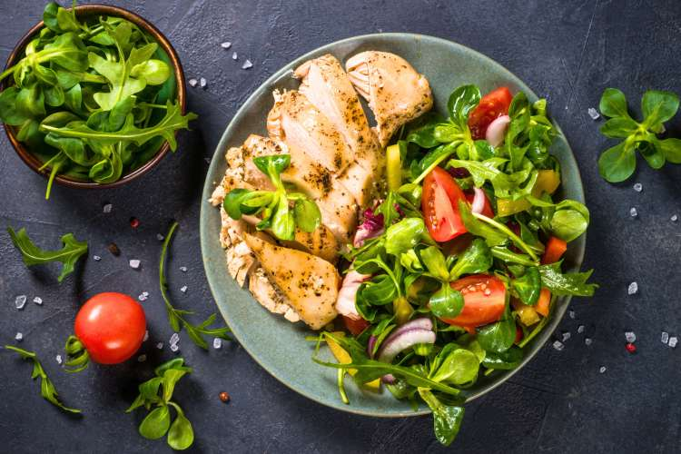

Gizi Seimbang
Makan Sehat Nggak Harus Mahal, Lho!
Yuk, kenali cara memilih makanan bergizi dengan bahan sederhana yang mudah ditemukan.
Jelajahi berbagai informasi kesehatan, temukan tips praktis, dan mulai bangun kebiasaan baik dari langkah kecil setiap hari. Karena hidup sehat dimulai dari pilihan sederhana yang kamu lakukan hari ini!
Mulai Jelajahi →Menjaga kesehatan tidak selalu harus dimulai dari perubahan besar. Kita bisa memulainya dengan mengenali kebutuhan tubuh, membangun kebiasaan baik, dan menerapkannya secara bertahap.
Melalui Sehat Bersama, kamu bisa menemukan informasi dan panduan sederhana untuk mendukung gaya hidup yang lebih sehat.
Kenali Kami Lebih Dekat →Yuk, kenali beberapa kebiasaan yang bisa membantu menjaga kesehatan tubuhmu.

Yuk, kenali cara memilih makanan bergizi dengan bahan sederhana yang mudah ditemukan.
Biasakan tubuh tetap aktif dengan kegiatan sederhana yang bisa dilakukan setiap hari.
Kenali pentingnya istirahat untuk membantu menjaga kesehatan dan konsentrasi.
Tidak perlu langsung mengubah semuanya sekaligus. Mulailah dengan kebiasaan sederhana dan lakukan secara konsisten.